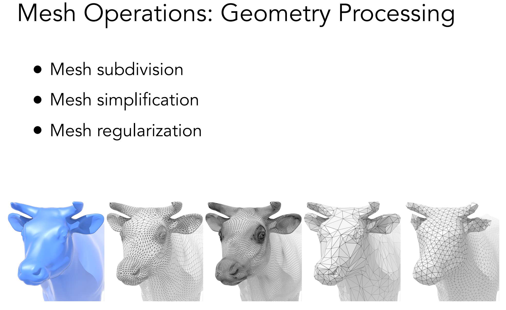

Computer Graphics
Bézier Curves, Meshes, and the Half-Edge Data Structure
Howard Yao
Overview
This assignment explored two major areas of computer graphics: smooth geometric representations and mesh processing. We first learned how Bézier curves and surfaces can be constructed through repeated linear interpolation, showing how complex shapes can emerge from a small set of control points. We then shifted to mesh processing, where the half-edge data structure allowed us to compute vertex normals, perform edge flips and splits, and ultimately implement Loop subdivision.
The most interesting concept from this assignment is to see how powerful simple local operations can be. Whether it was repeatedly interpolating points to create a smooth curve or modifying a small neighborhood of a mesh to refine an entire surface, complex geometric behavior consistently emerged from a collection of simple and intuitive rules and operations!

Section I: Bezier Curves and Surfaces
Part 1: Bezier curves with 1D de Casteljau subdivision
Before we talk about curves, let us first think about a more basic question:
How does a computer draw a smooth curve?
To us, a curve feels natural. We can draw one by moving a pencil across a piece of paper without thinking too much about what happens between the starting and ending points, in one complete go. However, a computer does not naturally understand the idea of “smoothness,” as it is difficult to even describe in our human language what a smooth line even is. Rather, a computer only understands information that we explicitly provide, such as definitions, coordinates, equations, and instructions.
One possible approach is to describe a curve using many tiny intersecting points. And use these defined coordinates to solve a high-degree polynomial that fits across all points.
The result may appear smooth when the # of coordinates are low. However, as the number of samples increases, the lines twist and turn incessantly, and most critically, we have no freedom to control this aspect.
This is where Bézier curves become useful.
A Bézier curve uses a small set of control points to describe a smooth path. The key idea is surprisingly simple:
A Bézier curve is created by repeatedly performing linear interpolation, or lerp, between nearby points.
Start with lerp
Suppose we have two points A and B. Linear interpolation gives a point somewhere along the line segment connecting them:

Its formal definition is as follows:
One interesting property of Bezier curves is that the curve does not usually pass through all of its control points. It normally begins at the first control point and ends at the last one, while the points in between act more like magnets that pull the curve toward them.
The control points do not tell the curve exactly where to go. Instead, they influence its direction and shape.
This makes Bezier curves especially useful in computer graphics and design. A smooth shape can be adjusted by moving only a few control points instead of editing hundreds of individual samples.
From Control Points to a Curve
From the definition, we know the value of the function between [0,1] produces points somewhere between the beginning and the end of the curve.
However, simply moving linearly from the first control point to the last one would only produce a straight line. To create a curve, we need the intermediate control points to influence the movement as well. To do so, we would have to establish more linear interpolation across the interpolations established by the original control points.
The method we use for this is called de Casteljau’s algorithm.
de Casteljau’s Algorithm
Suppose we are given four control points:
At the first level, we interpolate between every pair of neighboring control points:
Visually, the original four control points generate three new points defined by 3 functions of t in [0,1]:
We then repeat the same operation on the new points:
Finally, we interpolate one more time:
At this point, only one point remains. This final point is the position on the Bezier curve corresponding to the chosen value of (t).

Implementation of evaluateStep()
The evaluateStep() function is responsible for computing one level of de Casteljau’s algorithm.
Given a vector of control points, we iterate through every neighboring pair and calculate a new interpolated point:
The resulting points are stored in a new vector.
For example, if the input contains six points, the output contains five. If the input contains five points, the output contains four.
Each time E is pressed, the current set of points is passed into evaluateStep(), and the returned vector becomes the next visible level.
Evaluating Our Six-Point Curve
For the first experiment, we created a custom Bezier curve containing six control points.

By pressing E, we can observe each level of de Casteljau’s algorithm.
The first step produces five interpolated points.

The second step produces four points.

The process continues until only two points remain.

Finally, the last interpolation creates a single point on the curve.

By pressing C, we can also display the complete Bezier curve. This helps us see that the final point generated by de Casteljau’s algorithm lies directly on the completed curve.

An interesting observation is that the intermediate polygons become progressively smaller and move closer to the final curve. Although these intermediate points are not permanently part of the final curve.
Modifying the Curve and the Parameter (t)
After evaluating the original curve, we moved several control points to create a slightly different shape.
Even though only a few control points were changed, the entire curve responded smoothly. Control points closer to a region of the curve had a stronger visible influence on that region, while the endpoints remained fixed unless the first or final control point was moved.
We also changed the parameter (t) using the mouse scroll wheel.

As (t) changed, every interpolation level moved simultaneously. The final evaluated point traveled along the Bezier curve from the first control point toward the last control point (along the green line).
When (t) was close to (0), the final point remained near the beginning of the curve. When (t) approached (1), it moved closer to the end.
Final Observation
Before implementing this task, a Bezier curve may appear to be a complicated polynomial object. However, de Casteljau’s algorithm gives us a much more geometric way to understand it.
We begin with a small number of control points. We repeatedly interpolate between neighboring points. Every level becomes smaller until only one point remains. Then, as (t) moves from (0) to (1), that final point traces the complete curve.
In other words, instead of directly teaching the computer how to draw a curve, we teach it only how to find points between other points. By repeating this simple lesson several times, the smooth curve eventually appears on its own.
Part 2: Bezier surfaces with separable 1D de Casteljau
A curve only needs to describe motion along one direction. We can imagine moving from the beginning of the curve toward the end using a single parameter (t).
A surface, however, has two independent directions.
For example, imagine placing a piece of flexible fabric on a table. We can draw a beautiful curve across the fabric, but we can also move vertically. To identify a unique point on the fabric, one parameter is no longer enough. We need two:
The parameter (u) describes how far we travel in one direction across the surface, while (v) describes how far we travel in the other direction.
This gives us a parameterized surface:
At first, evaluating a smooth surface may sound much more difficult than evaluating a curve. However, the interesting part is that we do not actually need a completely new algorithm.
We can construct a Bézier surface by repeatedly using the same one-dimensional de Casteljau algorithm from Part 1.
A Bézier surface can be evaluated by first evaluating several Bézier curves in one direction, and then evaluating another Bézier curve through the resulting points in the other direction.
From a line of control points to a grid
For a Bézier curve, the control points are arranged in a single sequence:
For a Bézier surface, the control points are instead arranged in a two-dimensional grid/array:
Each point now has a three-dimensional position:
Just like the control points of a Bézier curve, these points do not necessarily lie directly on the final surface. Instead, they form a control mesh that pulls and bends the surface toward different regions of 3D space.

In a curve, moving a control point changes the direction of the curve around that region. In a surface, moving one control point can create a bump, a valley, or a bend in the surrounding surface.
This gives us a compact and intuitive way to model smooth three-dimensional shapes without manually defining every point on the surface.
Evaluating the surface in two stages
Suppose we are given the control-point grid and want to evaluate the surface at the parameter pair .
We first choose one direction to evaluate. In our implementation, we begin by treating every row of the grid as an independent Bézier curve.
For the first row:
we apply de Casteljau’s algorithm using the parameter . This produces one evaluated point:
We then repeat the same operation for every other row:
After this first stage, the entire grid has been reduced to four points:
Each of these points represents the position reached at the same parameter on one row of the control grid.
We then treat these four resulting points as the control points of another Bézier curve and evaluate this curve using the second parameter (v):
This final result is one point on the Bézier surface.
Implementation of evaluateStep()
The first function, evaluateStep(), performs one level of de Casteljau subdivision in three dimensions.
Its behavior is almost identical to the two-dimensional version from Part 1. The only difference is that the control points are now Vector3D values rather than Vector2D.
Given points, the function returns interpolated points.
The interpolation equation remains exactly the same:
Implementation of evaluate1D()
The evaluate1D() function evaluates a complete Bézier curve from a sequence of 3D control points.
Rather than performing only one interpolation level, it repeatedly calls evaluateStep() until only one point remains.
The final remaining point is the evaluated point on the 3D Bézier curve at parameter (t).
This implementation is especially convenient because it works for any number of control points. The function does not need to know the degree of the curve beforehand. It simply continues interpolating until only one point remains.
Implementation of evaluate()
The evaluate() function combines the two one-dimensional evaluations to compute a point on the full Bézier surface.
First, we evaluate every row of control points using (u):
For every row, evaluate1D() returns one point. These points are collected inside newPoints.
Once every row has been evaluated, the resulting vector becomes the control-point sequence for the second curve. We then call evaluate1D() again using (v).
The returned point is:
Evaluating the Bézier teapot
After implementing the three evaluation functions, we loaded bez/teapot.bez.
For every patch, the program evaluates many (u,v) parameter pairs and connects the resulting positions into triangles.

The final result shows that a complicated object such as a teapot can be constructed from a collection of relatively small and simple control-point grids.
Section II: Triangle Meshes and Half-Edge Data Structure
Part 3: Area-weighted vertex normals
A triangle is always a flat geometric surface. No matter how small it becomes, every triangle still has one constant normal direction across its entire face. If we shade each triangle using only its own face normal, neighboring triangles may receive noticeably different lighting values.
This creates flat shading.

dae/teapot.dae with flat shadingUnder flat shading, the teapot appears faceted because every triangle behaves like a separate small mirror. Even if neighboring triangles approximate one smooth curved surface, the lighting changes suddenly whenever we cross from one face to another.
This gives us an interesting problem. The geometry is still made of discrete triangles, but visually, we want the surface to appear continuous.
To achieve this, we can assign a normal to every vertex instead of using only one normal for every face.
From Face Normals to Vertex Normals
For a triangle with vertices , , and , we can define two edge vectors:
and
The cross product gives a vector perpendicular to the triangle:
The direction of this vector depends on the winding order of the triangle, in the scale of area due to the property of the cross product. If the vertices are ordered consistently, the normal points toward the exterior of the surface.
After normalization,
we obtain the unit face normal used for lighting.
However, if we simply assign this face normal to all three vertices, the result would still behave like flat shading. Neighboring faces would continue to disagree about the direction of the surface.
Instead, we calculate one vertex normal by combining the normals of all faces adjacent to that vertex.
The normal at should represent the overall direction of the surface around that local neighborhood.
A natural first attempt is to average all neighboring unit face normals:
This gives every neighboring triangle equal influence.
However, not every neighboring triangle necessarily has the same area.
Suppose one large triangle and several extremely small triangles meet at the same vertex.
If we average only their unit normals, every face contributes equally. A tiny triangle would influence the final vertex normal just as much as the large triangle, even though it represents a much smaller portion of the surrounding surface.
This may produce a vertex normal that is overly sensitive to the triangulation rather than the actual geometric area!
To reduce this problem, we weight each face normal according to the area of its triangle:
Here, represents the set of faces neighboring vertex , and is the area of each face.
Larger triangles contribute more strongly, while smaller triangles contribute less.
Anddddd! Our lovely cross product already contains the information we need!
For a triangle,
where is the triangle’s area.
Therefore, if we add the unnormalized cross-product vectors directly, we are automatically performing area weighting up to the common factor of two(doesn’t matter since we are normalizing):
We then normalize once after all adjacent face normals have been accumulated.
Walking Around the One-Ring Neighborhood
To calculate a vertex normal, we need to visit every face adjacent to that vertex.
This local set of neighboring faces is often called the vertex’s one-ring neighborhood.
The half-edge data structure makes this traversal possible. We begin from any halfedge whose origin is the current vertex:
For the current face, we use the three triangle vertices to calculate the face’s unnormalized normal.
Then we rotate to the next neighboring face using:
The current halfedge begins at the vertex we are evaluating. Its twin crosses the current edge into the neighboring face. Calling next() then advances to another halfedge whose origin is once again the same central vertex but in different faces.
By repeatedly applying twin()->next(), we rotate around the vertex and visit every adjacent face.
We stop once the traversal returns to the original halfedge.
Implementation
The implementation begins by creating a zero vector that stores the accumulated normal:
We then save the starting halfedge h
For each adjacent face, we retrieve the triangle’s three positions.
We construct two edge vectors to cross product and find their normal weighted by the area.
The traversal continues around the one-ring neighborhood:
until we return to the starting halfedge.
We then ultimately normalize the normal vector with the final .unit() operation.
From Vertex Normals to Phong Shading
Once every vertex has a normal, we can interpolate these normals across the interior of each triangle.
Suppose a sample point inside a triangle has barycentric coordinates:
If the three vertex normals are
Then the sample normal can be calculated as:
The interpolated result is then normalized before being used in the lighting calculation.
This is the idea behind Phong shading.
The geometry is still made from flat triangles. However, the surface normal now changes smoothly across each face, so the lighting also changes smoothly.
In other words, we do not actually bend the triangles. We only make the light behave as though the surface were curved.
NOTE: This is not implemented in this HW and is implicit in the project; I just looked it up for fun!
Comparing Flat and Phong Shading
The following screenshot shows dae/teapot.dae using the default flat shading.
The triangular structure is clearly visible. Sudden lighting changes occur along the boundaries between faces, especially around curved regions.
After pressing Q, the renderer switches to Phong shading using the area-weighted vertex normals.

The geometry itself has not changed. The mesh contains the same vertices, edges, and triangles as before. However, the surface appears much smoother because the normals are interpolated continuously across neighboring faces.
This comparison demonstrates an important idea in computer graphics:
The perceived smoothness of an object does not only depend on how much geometry it contains. It also depends on how the surface normals are represented and interpolated in rendering!
Part 4: Edge flip
One of the interesting properties of the half-edge data structure is that it allows us to change the topology of a mesh without changing its geometry. And this will be the fundamental idea for the rest of the tasks.
At first, this may sound a little strange. Most mesh editing operations seem to involve moving vertices around in space. However, some operations only modify the way existing vertices are connected.
The edge flip operation is one such example.
Suppose we have two triangles sharing an interior edge:

The shared edge is .
Rather than changing the positions of any vertices, an edge flip simply removes the shared edge and reconnects the two opposite vertices.
In other words, the original diagonal is replaced by the diagonal .
Although this operation appears simple geometrically, it becomes much more interesting when viewed through the half-edge data structure.
However, when looking at the diagram above, it is tempting to think that edge flipping only involves changing one edge.
But actually, a half-edge mesh stores much more than just vertices and edges.
Every half-edge stores:
- its neighboring half-edge
- its twin
- its incident vertex
- its incident edge
- its incident face
This means that flipping a single edge requires updating a surprisingly large number of relationships! 🙀
A useful way to think about the operation is that we are not modifying one edge. We are rebuilding the entire local neighborhood surrounding that edge.
For the two triangles involved in the flip, we have:
- 4 vertices
- 5 edges
- 2 faces
- 6 halfedges
all participating in the operation.
Any incorrect pointer assignment can immediately corrupt the mesh.
Visualizing the Local Neighborhood
Before implementing the operation, we first labeled every element surrounding the edge.
The diagram became the most important debugging tool throughout the implementation.
Rather than thinking in terms of geometry, we can think of the operation as transforming one connectivity graph into another.
Once every vertex, edge, face, and half-edge had a unique label, it became much easier to determine which relationships needed to change and which relationships could remain untouched.
Implementation
The implementation follows a fairly systematic process.
First, we gather references to every element involved in the operation:
We then retrieve the corresponding vertices, edges, and faces.
Once all local elements have been identified, the flip operation can be viewed as reassigning connectivity rather than creating new geometry.
For this task especially, no new vertices, edges, faces, or half-edges are allocated. We simply update the neighborhood relationships so that the shared edge connects the opposite pair of vertices.
The majority of the implementation consists of carefully updating the neighboring half-edges using:
After the half-edge relationships are updated, the corresponding vertex, edge, and face pointers are reassigned to maintain consistency throughout the structure.
Debugging Journey
Interestingly, the most difficult part of this task was not understanding what an edge flip should do geometrically.
The difficult part was keeping track of all the pointers.
At first, it felt like every modification fixed one problem while creating two new ones somewhere else. A missing twin relationship could cause an infinite traversal loop. An incorrect face assignment could make part of the mesh disappear entirely. Sometimes the teapot would render correctly from one angle but reveal broken connectivity when rotated.
It almost felt like going back to CS61A and CS61B‘s classic reassigning linked list and tree, except this is much more complicated.
One lesson learned very quickly was that trying to update pointers incrementally often made debugging much harder. It was a very bad decision to made 😗
Instead, it was much more reliable to write down every relationship on paper and explicitly assign every field, even if some of those assignments technically remained unchanged.
In other words, rather than keep thinking:
Which pointers need to change?
it became easier to ask:
What should every pointer be after the operation is complete?
In plain language of my favor, let’s just change everything!!!
This approach made the implementation significantly easier to reason about and greatly reduced the chances of overlooking a relationship.
Results
The screenshots below show the teapot before and after several edge flips.


Although the overall shape of the mesh remains unchanged, the local triangulation differs noticeably. This demonstrates an important distinction between geometry and topology.
(There is a degenerate case on the right side)
The positions of the vertices remain exactly the same, but the connectivity between them changes. The edge flip operation therefore alters the mesh structure without altering the underlying surface itself.
Part 5: Edge split
After implementing edge flips, we already had the ability to modify the connectivity of a mesh. However, the total number of vertices, edges, and faces always remained the same.
The edge split operation is different.
Instead of simply rearranging existing connections, an edge split actually introduces new geometry into the mesh. New vertices, edges, faces, and half-edges must all be created while preserving the consistency of the surrounding topology.
At first glance, splitting an edge sounds straightforward. We simply place a new vertex at the midpoint of an edge and connect it to the surrounding vertices.
Unfortunately, from the perspective of the half-edge data structure, the operation is considerably more involved 😖
Suppose we have two triangles sharing an edge:

The edge b↔c is shared by two faces.
When we split this edge, a new vertex m is inserted at its midpoint:
The original two triangles become four triangles:
As a result, the mesh becomes more refined while still representing the same overall shape.
Unlike edge flipping, edge splitting increases the size of the mesh.
For every interior edge split, we create:
The original edge itself is reused as one half of the newly split edge, while three entirely new edges must be allocated.
This observation becomes extremely useful during debugging because it gives us a way to verify whether the operation is behaving correctly.
If the number of newly created elements does not match these expected counts, then something is almost certainly wrong with the implementation.
Visualizing the Local Neighborhood
Before writing any code, the most important step was drawing the local neighborhood and labeling every element.


.jpg){kind=link}
.jpg){kind=link}
Similar to Task 4, every vertex, edge, face, and half-edge involved in the operation received a unique label.
However, edge splitting introduces an additional challenge: some elements are reused while others are newly created, which is something we need to keep track of.
Implementation
The implementation follows four main stages.
First, all existing elements surrounding the target edge are collected.
We then identify the four surrounding vertices and the two neighboring faces.
Once the local neighborhood has been isolated, new mesh elements are allocated along with six new halfedges.
The newly inserted vertex is placed at the midpoint of the original edge.
After all required elements have been created, the majority of the implementation consists of reassigning connectivity just like task 4.
This step is very similar to edge flipping, except that the local neighborhood is now larger because several entirely new elements must be integrated into the structure.
Finally, the corresponding vertex, edge, and face pointers are updated so that every element references a valid halfedge.
Debugging Journey
Compared to edge flipping, edge splitting felt significantly more challenging in goal but much easier in practice. As the strategies are overall identical compared to flipping.
By generating a comparison graph between vertices, edges significantly helped the process.
Similar to Task 4, drawing the complete neighborhood on paper ultimately became the most reliable debugging tool. Once every relationship was explicitly written down, implementing the connectivity updates became much easier.
Results
The screenshots below show the mesh before and after several edge splits.


The overall shape of the object remains unchanged, but the mesh now contains significantly more geometry. Areas that were previously represented by a small number of triangles are now described using a denser triangulation.
Combining Edge Splits and Edge Flips
The screenshots below show the effect of combining both operations.

This combination allows us not only to add more geometry but also to control how that geometry is organized. The resulting mesh often has a much more regular triangulation than one produced through edge splitting alone. As well as foreshadowing for part 6.
Part 6: Loop subdivision for mesh upsampling
Up until this point, most of the mesh operations we implemented were local. Edge flips changed the connectivity of a small neighborhood, while edge splits introduced new geometry around a single edge.
Loop subdivision takes a different approach. Instead of modifying a small part of the mesh, it systematically refines the entire mesh and produces a smoother surface.

The implementation follows four main steps:
- Compute the new positions of all original vertices using the Loop subdivision weighting rules.
- Compute the new positions of all original edges.
- Split every edge that existed in the original mesh.
- Flip every new edge that connects an old vertex to a new vertex.
Finally, all vertex positions are updated using the values computed before subdivision began.
This ordering is important because the subdivision rules depend on the original mesh connectivity. If positions were updated while new vertices and edges were still being created, later calculations would no longer be based on the same mesh.
Implementation
One challenge of implementing Loop subdivision is that the algorithm simultaneously depends on both the old mesh connectivity and the new mesh connectivity. If we immediately update vertex positions while creating new vertices and edges, later calculations would no longer be operating on the same mesh. To avoid this issue, the implementation separates the subdivision process into several stages.
First, we iterate through every original vertex and compute its future position using the Loop subdivision weighting rule. Rather than updating the vertex immediately, the result is stored inside the vertex's newPosition field.
Next, we iterate through every original edge and compute the position of the future midpoint vertex using the neighboring vertices surrounding the edge. These values are stored in each edge's newPosition field.
At this point, the mesh itself has not changed. We have only calculated where all vertices should eventually move.
The next step is to perform the actual subdivision. Since splitting an edge creates new edges, we first store all original edges inside a separate vector. This ensures that we only subdivide edges that existed before the process began.
Each original edge is then split using the edge split operation from Part 5. The newly inserted vertex inherits the position previously stored inside the edge's newPosition field.
After all original edges have been split, the mesh now contains a mixture of old and newly created vertices. We then flip every new edge that connects one old vertex and one new vertex. This step is necessary because Loop subdivision expects a particular connectivity pattern after refinement. Without these flips, the resulting triangulation would not match the subdivision scheme.

Finally, once all topology modifications have been completed, every vertex copies its newPosition value into its actual position field.
This produces the fully subdivided mesh.
One implementation detail that proved particularly useful was the use of the isNew flag on both vertices and edges. These flags made it easy to distinguish between original mesh elements and newly created ones during the edge splitting and edge flipping stages.
Sharp Corners and Edges
One of the first things we notice after applying Loop subdivision is that sharp corners and edges gradually become rounded.
This happens because every subdivision step replaces vertex positions with weighted averages of neighboring vertices. Similar to how a blur filter smooths sudden changes in an image, Loop subdivision smooths sudden changes in geometry.

We can reduce this effect by pre-splitting edges near important features. The additional vertices provide more local geometric control, causing the smoothing to be distributed across a smaller region. As a result, sharp features are preserved more effectively after subdivision.

Symmetry of the Cube
After repeatedly subdividing dae/cube.dae, the cube gradually becomes rounded. Interestingly, it also becomes slightly asymmetric.
At first this seems surprising because the cube itself is perfectly symmetric. However, Loop subdivision depends not only on geometry, but also on mesh connectivity.
Although each face of the cube appears to be a square, the mesh is actually composed of triangles. Different diagonal orientations create different local neighborhood structures, causing the subdivision rules to behave slightly differently across the model.
These small differences accumulate after several subdivision iterations and eventually become visible as asymmetry.
To reduce this effect, we can pre-process the cube using edge flips and edge splits. By creating a more symmetric triangulation, corresponding regions of the cube receive identical subdivision rules and therefore evolve more similarly during refinement.

Two meshes may represent the same geometric shape, yet produce different subdivision results if their connectivity differs. Loop subdivision therefore depends not only on where vertices are located, but also on how those vertices are connected.